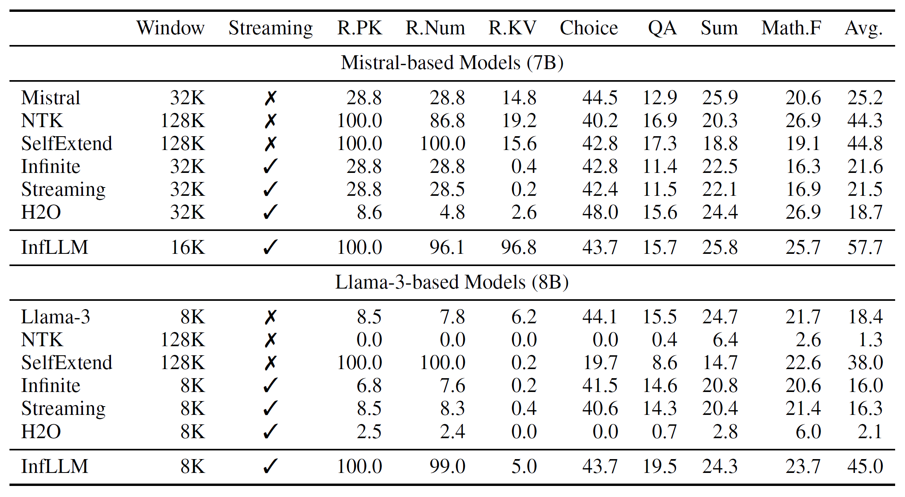
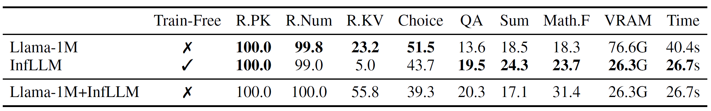
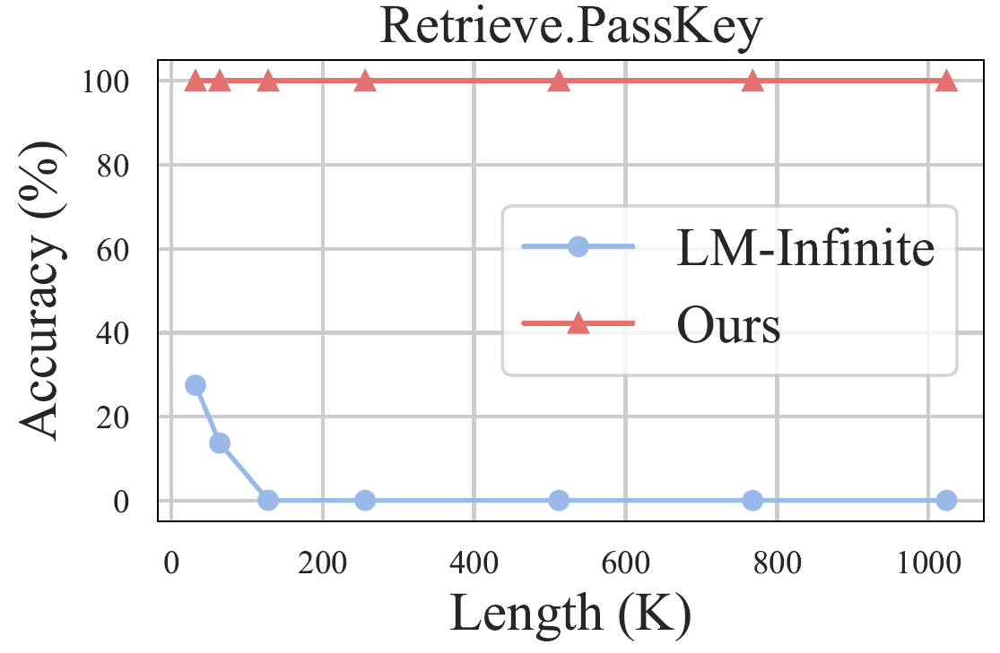
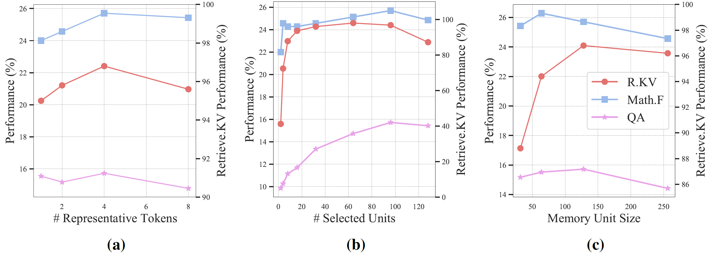

InfLLM: Training-Free Long-Context Extrapolation for LLMs with an Efficient Context Memory
NIPS 2024
gpu
llm
attention
memory
systems
InfLLM
Background & Motivation
The Long-Context Problem
- LLMs are a cornerstone for applications with streaming inputs (e.g., LLM-driven agents).
- However, existing LLMs are pre-trained on sequences with a restricted maximum length.
- They cannot process longer sequences due to out-of-domain and distraction issues.
Common Solutions & Their Drawbacks
- Continual Pre-training:
- Involves training LLMs on longer sequences.
- Introduces expensive computational overhead.
- Requires large-scale, high-quality long-sequence datasets.
- Can uncontrollably change model capabilities.
- Sliding Window Attention:
- Discards distant contexts to process streaming inputs.
- Fails to capture long-distance dependencies, leading to information loss.
Motivation
- Can we unveil the intrinsic capacity of LLMs to understand extremely long sequences without any fine-tuning?
- The goal is to develop a training-free method that allows LLMs to:
- Efficiently process long sequences with a limited context window.
- Effectively capture long-distance dependencies.
System Design
InfLLM: Overall Framework
- InfLLM combines a sliding window with an efficient context memory.
- For each step, the model attends to:
- Initial tokens (e.g., system prompts).
- Local tokens (the sliding window).
- Relevant memory units retrieved from the distant context.

Context Memory: Block-Level Units
- To avoid massive computation, InfLLM does not store every past token individually.
- Past key-value (KV) vectors are grouped into blocks, which serve as memory units.
- This leverages the local semantic coherence of long sequences.
Context Memory: Efficient Lookup
- Representative Tokens:
- Within each block, a few semantically important tokens are selected as “representative tokens”.
- These tokens act as a summary for the entire block.
- Representative score of token \(m\) within a KV block. \[ r_m \;=\; \frac{1}{L} \sum_{j=1}^{L} q_{m+j}\!\cdot\!k_m \]
- The relavance between token \(m\) and future query vectors (\(m+j\))
- Relevance Computation:
- To find relevant context, the model computes relevance scores between the current query and the representative tokens of each block.
- Only the most relevant blocks are loaded for attention computation.
- \[ \mathrm{sim}(X,B) \;=\; \sum_{i=1}^{l_X}\;\sum_{j=1}^{r_k} q_{i+\!l_P}\!\cdot\!k^B_{b_j} \]
Cache Management & Offloading
- To handle extremely long sequences with limited GPU memory, InfLLM employs an offloading mechanism.
- Most memory units are stored in CPU memory.
- A LRU cache is maintained on the GPU to keep frequently needed units readily available.
- This enables processing of >100K token sequences with just 26G of VRAM.
Evaluation
Experiment Setup
- Base Models:
- Mistral-7B-Instruct-v0.2 (32K context)
- Llama-3-8B-Instruct (8K context)
- Benchmarks:
- \(\infty\)-Bench: Average sequence length of 145.1K tokens.
- LongBench: 95% quantile for sequence lengths is 31K.
- Baselines:
- Original models, NTK, SelfExtend, LM-Infinite, StreamingLLM, H2O.
\(\infty\)-Bench
- InfLLM significantly outperforms baseline models, especially those using only a sliding window.
- It successfully generalizes Llama-3 from an 8K context to over 16 times its length.
- This demonstrates that the context memory effectively supplements the model with relevant long-range information.

Comparison with Continual Training
- InfLLM is compared against Llama-3-8B-Instruct-Gradient-1048k (Llama-1M), a model fine-tuned on long sequences.
- InfLLM achieves comparable or superior results without any training.
- It uses only 34% of the GPU memory and achieves a 34% decrease in time consumption.

Scaling to 1,024K Context
- On the Retrieve.PassKey task, InfLLM is tested on sequences up to 1,024K tokens.
- InfLLM maintains nearly 100% accuracy, effectively locating the key information.
- The baseline (LM-Infinite) fails as sequence length increases because the key is outside its local window.

Impact of Memory Settings
- The performance of InfLLM is influenced by the configuration of its context memory.
- Ablation studies show the impact of:
- Number of representative tokens per unit.
- Number of memory units selected per step.
- The size of each memory unit.
- These results help in finding an optimal balance between performance and computational cost.
